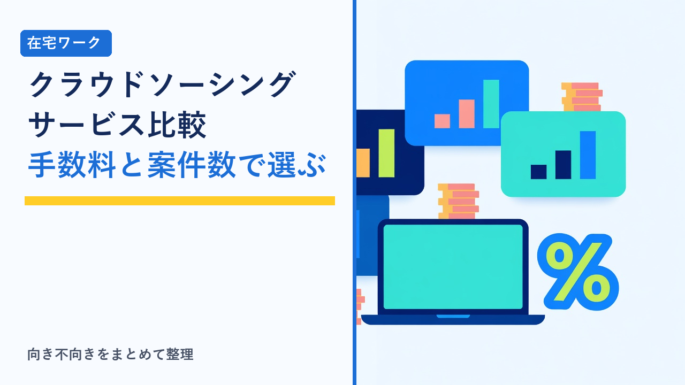
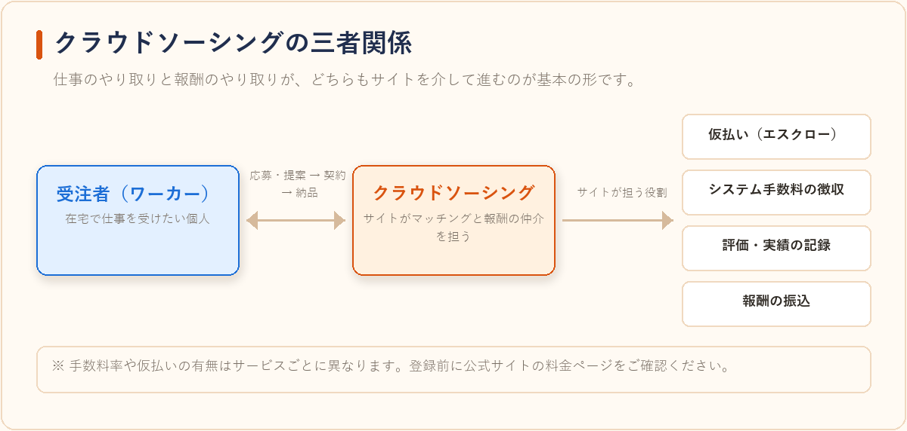
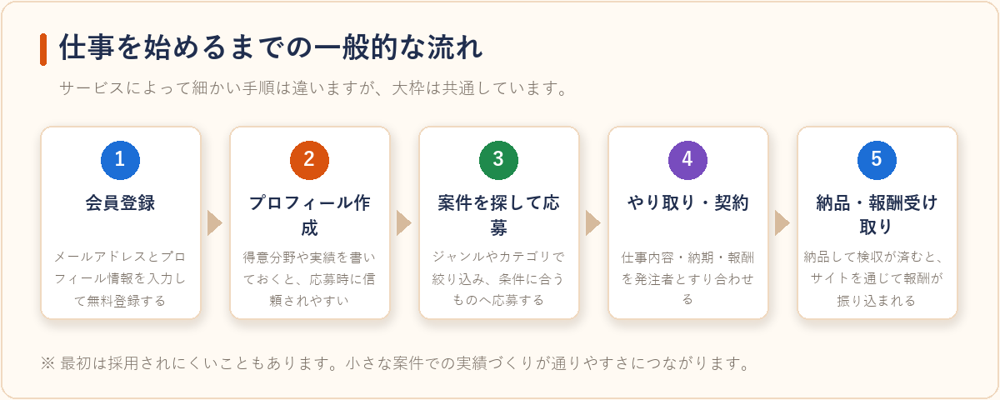
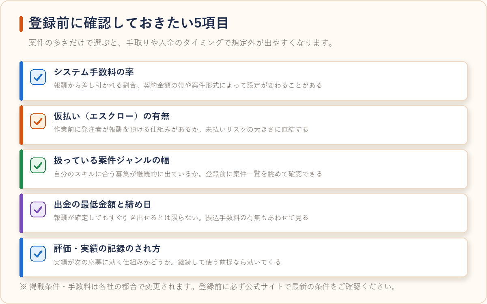

在宅ワーク・クラウドソーシングサービス比較【2026年版】
2026-07-27 更新

すきま時間に自分のスキルを活かして仕事をしたい人向けに、クラウドソーシング・スキルシェア系のサービスを客観的にまとめました。個人がスキルを提供して仕事を受注するタイプと、企業側が業務代行スタッフを探すタイプ、それぞれの特徴を紹介します。

サービス比較
| サービス | タイプ | 特徴 |
|---|---|---|
| クラウディア（Craudia） | 個人向けスキルシェア・クラウドソーシング | ライティング・デザイン・Web制作など幅広いジャンルの案件が掲載されている国内大手のクラウドソーシングサービス。案件に応募して仕事を受注する形式。 |
| フジ子さん | 企業向けオンラインアシスタント代行 | 企業や個人事業主が、事務作業やデータ入力などを外部スタッフに依頼できるオンラインアシスタントサービス。仕事を「頼む側」向けのサービス。 |
| クラウドワークス テック | フリーランス向けエージェント・求人紹介 | エンジニア・デザイナー等のフリーランス向けに、案件紹介から契約サポートまで行うエージェントサービス。単発の案件応募型ではなく、担当者が案件を紹介してくれる形式。 |
クラウディアの特徴
- 会員登録・案件閲覧は無料
- ライティング、デザイン、プログラミングなど案件ジャンルが豊富
- 実績を積むことで継続案件につながりやすい
クラウディアのようなクラウドソーシングサービスは、案件の単価や難易度の幅が広いのが特徴です。初心者向けの簡単な作業から、実績を積んだワーカー向けの専門的な案件まで揃っているため、「まず小さな案件で慣れてから、徐々にスキルの単価を上げていく」という使い方がしやすい仕組みになっています。プロフィール欄に過去の経験やポートフォリオを充実させておくと、案件への応募時に採用されやすくなる傾向があります。
フジ子さんの特徴
- 依頼したい業務内容に応じてスタッフをアサインしてもらえる
- 無料トライアルが用意されている
- 人手不足の解消や業務効率化を検討している事業者向け
フジ子さんのようなオンラインアシスタント代行は、採用活動をせずに事務作業を任せられる人員を確保できる点が大きなメリットです。データ入力、資料作成、スケジュール調整、リサーチ業務など、専門スキルというよりは「時間がかかるが誰かに任せたい業務」を委託するケースで活用されることが多く、正社員やパートを新たに雇用するよりも柔軟に業務量を調整しやすいのが特徴です。
クラウドワークス テックの特徴
- エンジニア・デザイナーなど専門職のフリーランス向け
- 案件は自分で探すのではなく、エージェント担当者が紹介してくれる
- 契約条件の交渉や事務手続きのサポートも受けられる
クラウドワークス テックのようなエージェント型サービスは、案件応募型のクラウドソーシングと異なり、自分のスキルや希望条件をもとに担当者が案件を提案してくれる仕組みです。案件探しにかかる時間を削減できるほか、契約条件の交渉や事務手続きの面でもサポートを受けられるため、開発・制作業務に集中したいフリーランスエンジニアやデザイナーに向いています。
クラウドソーシングで仕事を始めるまでの一般的な流れ
サービスによって細かい手順は異なりますが、案件応募型のクラウドソーシングでは、おおむね次のような流れで仕事を始めることになります。

- 1. 会員登録：メールアドレスやプロフィール情報を入力して無料登録する
- 2. プロフィール・ポートフォリオの作成：得意分野や過去の実績を記載しておくと、案件への応募時に信頼されやすい
- 3. 案件を探して応募する：ジャンルやカテゴリで案件を絞り込み、条件に合うものへ応募する
- 4. 発注者とのやり取り・契約：仕事内容や納期、報酬について発注者とすり合わせる
- 5. 納品・報酬の受け取り：成果物を納品し、検収後にサイトを通じて報酬が振り込まれる
最初のうちは応募しても採用されにくいこともありますが、プロフィールの充実や小さな案件での実績づくりを積み重ねることで、徐々に応募が通りやすくなっていく傾向があります。

どのサービスを選べばいい？立場別ガイド
すきま時間に自分のスキルで仕事を受けたい個人
クラウディアのような案件応募型のクラウドソーシングが向いています。まずは登録して案件を眺めてみるだけでも、自分のスキルがどんな価格帯で求められているか把握できます。
事務作業や雑務を外部に任せたい事業者・個人事業主
フジ子さんのようなオンラインアシスタント代行サービスが候補になります。自分で人を探して面接する手間をかけずに、業務を任せられるスタッフをアサインしてもらえるのが特徴です。
専門スキルを活かして案件を紹介してほしいエンジニア・デザイナー
クラウドワークス テックのようなエージェント型サービスが向いています。案件探しから契約条件の交渉まで担当者がサポートしてくれるため、営業活動に時間を割きにくい人でも案件を見つけやすくなります。
注意：掲載内容は各社の公式発表情報をもとにしています。募集ジャンルや料金体系は変更される場合があるため、詳細は必ず公式サイトでご確認ください。
よくある質問
クラウドソーシングは未経験でも始められますか？
サービスによりますが、クラウディアのようなサービスでは未経験者でも応募できる案件（データ入力・簡単なライティング等）が用意されていることが多いです。実績を積みながら徐々に単価の高い案件にステップアップしていく流れが一般的です。
クラウドソーシングとオンラインアシスタント代行は何が違いますか？
クラウドソーシングは「個人が案件に応募して仕事を受注する」仕組みであるのに対し、オンラインアシスタント代行は「企業側が業務を依頼し、サービス側がスタッフをアサインする」仕組みです。仕事を探す側なのか、人を探す側なのかで選ぶサービスが変わります。
フリーランスエージェントは利用料がかかりますか？
多くのエージェント型サービスは、フリーランス側（案件を受ける側）は無料で利用でき、企業側からの手数料で運営されている仕組みが一般的です。ただし条件はサービスごとに異なるため、登録前に規約を確認することをおすすめします。
報酬の受け取り方や手数料はサービスによって違いますか？
はい、サービスごとに異なります。クラウドソーシング型では、受注金額から一定のシステム利用料（手数料）が差し引かれて振り込まれる仕組みが一般的です。オンラインアシスタント代行やエージェント型は依頼主側の料金体系となるため、受注者側の手数料の有無や振込サイクルはそれぞれ公式サイトのFAQやヘルプページで確認しておくと安心です。
在宅ワークの収入は確定申告が必要になりますか？
会社員が副業として一定額以上の所得を得た場合や、個人事業主として継続的に収入を得ている場合は、確定申告が必要になることがあります。必要かどうかは収入額や働き方によって異なるため、在宅ワークの契約・報酬・確定申告の基礎知識まとめもあわせてご確認ください。